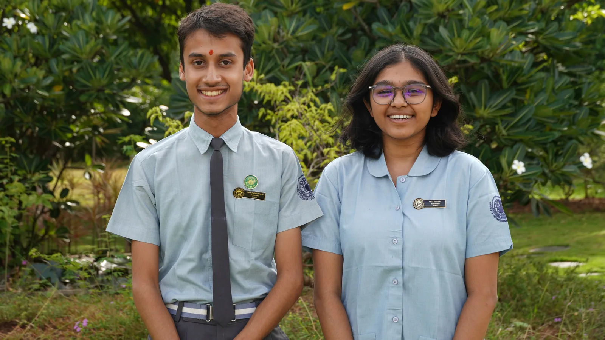

Student Council 2026–27
School Deans
Inspired by Gurudev’s vision, of “Spreading Maximum Happiness to Maximum People for The Maximum Amount of Time,” we, the Student Deans of CIRS 2026 - 27, aspire to contribute to it. Our aim is to transform ourselves and our fellow students into strong, capable and cultured individuals. We shall not fear to stand for Dharma and shall work together to safeguard the glory of Bharat with our dynamic spirituality.
- Aarav Ashish Bhartia
- Rhea Sontakke